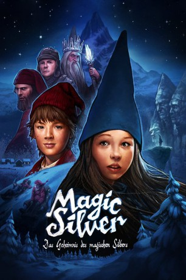

#8279 Magic Silver 1 - Das Geheimnis des magischen Silbers
 
 IMDB-Wertung: 5.6 / 10
IMDB-Wertung: 5.6 / 10  Metascore: 0
Metascore: 0 
Der Berg der blauen Zwerge ist ein wohl gehütetes Geheimnis, nur die kleinen Bewohner selbst wissen um die Welt die sich im blauen Berge versteckt. Um so größer ist die Aufregung, als plötzlich rote Zwerge in das blaue Königreich eindringen – was für ein Skandal! Ausgerechnet die blaue Prinzessin Blaurose, ist Schuld an dem ganzen Schlamassel. Erst war die Tochter des blauen Königs zu furchtsam, um den Berg überhaupt zu verlassen. Die Nachricht, dass ihr Vater tödlich erkrankt ist treibt das Mädchen jedoch an: Sie ist auf der Suche nach dem einzigen was ihn jetzt noch retten kann und das soll sich ausgerechnet bei den Menschen befinden…
Jahr: 2009
Dauer: 86 Minuten
FSK: 6
Land: Norwegen Studio: Kinostar FilmverleihTonspuren:
Untertitel:
Auflösung: 1080p (1920x816) Größe: 4648 MB
Genre: Abenteuer, Fantasy, Familie
Regisseur: Katarina Launing, Roar Uthaug
Drehbuch: Gudny Hagen
Soundtrack: Magnus Beite
Darsteller:
 Jan Gunnar Røise als Halvor
Jan Gunnar Røise als Halvor Rolf Kristian Larsen als
Rolf Kristian Larsen als - Ane Viola Semb als Fjellrose
- Johan Tinus Lindgren als Dreng
- Finn Schau als Fjellkonge
- Sigve Bøe als Rimspå
- Lillian Lydersen als Blåværskona
- Knut Walle als Nissefar
- Kari Ann Grønsund als Nissemor
- Martin Slaatto als Vom
- Johanna Mørck als Solveig
 Kyrre Hellum als Bjørnar
Kyrre Hellum als Bjørnar- Aurora Claes Digerud als
- Nikoline Ursin Erichsen als Tufsa
- Kirsten Høeg als
- Hedda Austad Lindgren als
Datei: X:\2-Dilogie(G-M)\Magic Silver\Magic Silver 1 - Das Geheimnis des magischen Silbers (2009, FSK6, 1920x816).mkv seit 16.02.2018
Festplatte: HD Collection-2(A-Z)-3(A-M)
 Alle Filme aus Gruppe '2-Dilogie(G-M)\Magic Silver'
Alle Filme aus Gruppe '2-Dilogie(G-M)\Magic Silver'